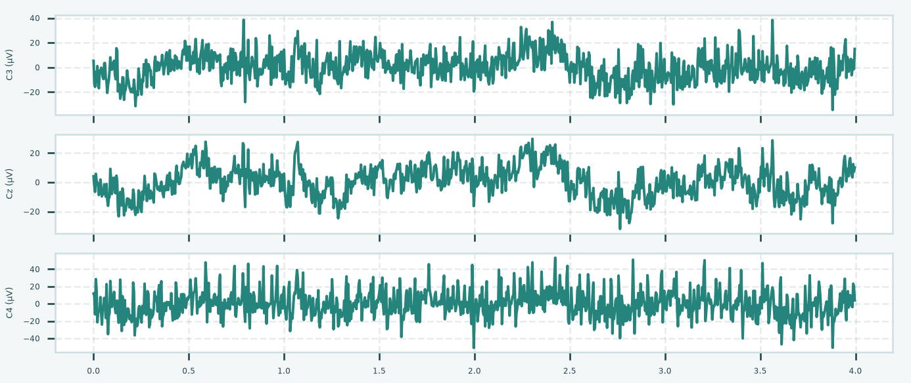
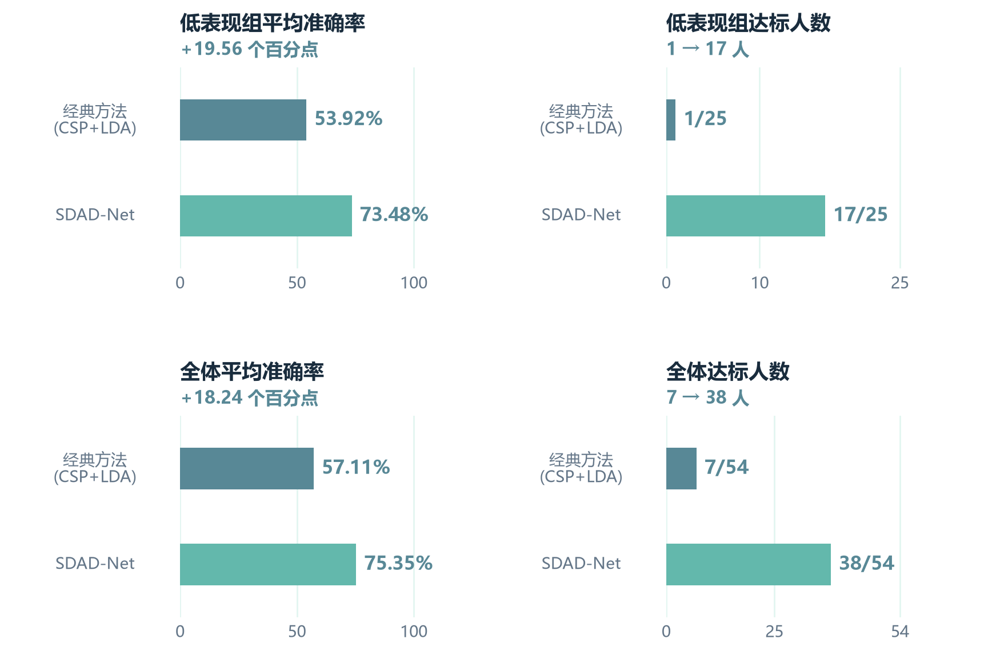
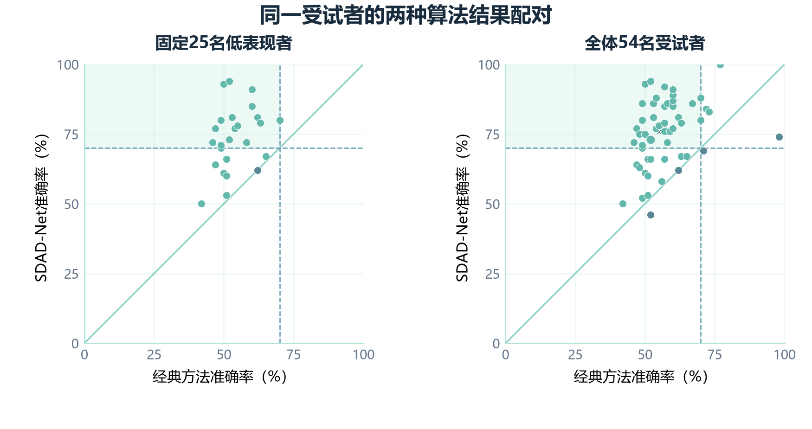
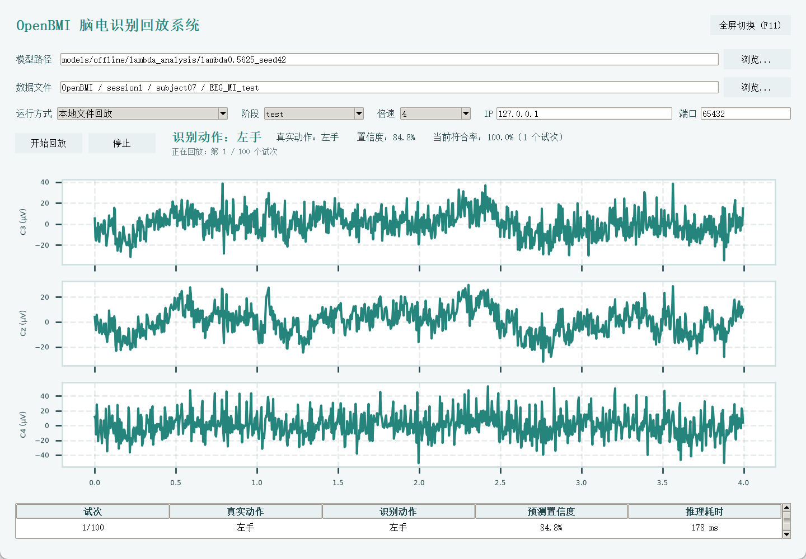

补足有效特征
融合局部时序模式、长程依赖和通道空间信息，形成互补的脑电表示。
BRAIN COMPUTER INTERFACE / 01
面向BCI盲群体的脑机信号增强解码算法及其脑控验证系统
探索解码算法 ↗SDAD-Net · 运动想象解码 · 低表现者增强

PROBLEM
运动想象能够在不执行实际肢体动作的情况下表达意图，但脑电噪声、个体差异与跨会话变化，使部分使用者难以获得稳定的识别反馈。总体准确率的提高，也可能掩盖低表现者的体验。
SDAD-Net 将时序与空间表征、教师软标签监督、后期组域适配整合到同一解码框架中，同时关注低表现组的平均准确率与达标覆盖。脑控小车作为实体任务反馈载体，用于呈现算法从信号到动作的验证过程。项目采用离线解码评估与在线闭环联调两层体系，分别观察识别表现与实体反馈。
SDAD 研究中，BCI 盲群体指训练数据内五折 CSP + LDA 准确率低于 70% 的低表现组；该阈值是研究分组标准，不是医学诊断或永久能力标签。THE IDEA
运动想象脑机接口从脑电中识别左右手运动意图，将信号中的变化转化为可观察的反馈，为运动功能受限人群提供不依赖实际肢体运动的交互途径。
脑电信号 → 意图解码 → 任务反馈融合局部时序模式、长程依赖和通道空间信息，形成互补的脑电表示。
先建立运动意图判别能力，再引入组间约束，减轻过早对齐对分类的干扰。
联合考察低组均值、达标人数和逐人变化，以实体任务展示识别结果。
02 / ALGORITHM ARCHITECTURE
三种方案呈现算法演进：基础解码、混合蒸馏、SDAD-Net。
共享时空融合思路，以不同训练策略应对低表现者解码。模型递进体现方法设计演进，各阶段采用各自的实验口径。
先形成分类能力，再以高低组均衡批次进行后期域适配。
类别均衡后随机遍历试次；无教师监督，也不纳入低表现组训练样本。
仍保留 CSP、时序与空间双分支、数据增强及 ε = 10−5 方差项。
每批 32 个样本，正常组采样占比 λ = 0.5625。
温度 T = 3，蒸馏权重 α = 0.5；部署仅使用学生模型。
教师以真实标签独立更新；软目标停止梯度后监督学生，T = 3，α = 0.5。
后期引入梯度反转，λd = 0.03；对抗强度随训练进度逐步增加。
双分支提取特征，真实标签与教师概率共同指导学生，建立运动意图判别能力。
加载配对末轮权重，重置优化器，执行 10 轮后期训练。每批 8 例：高低组各 2 人，每人左右手各 1 例。
按低组验证平均平衡准确率选模，含第 0 轮候选。部署学生与固定预处理，无需教师、域头或用户组标签。
LSDAD = (1 − α)(LCE + εLvar) + αT²KL(pT ∥ pS) + λdLdom
α = 0.5 · T = 3 · ε = 10−5 · λd = 0.03。GRL 前向恒等，反向乘 −γ；γ(p) = 2 / (1 + exp(−10p)) − 1。
后期学生学习率 10−4，教师学习率 10−3；匹配无对抗对照采用相同采样与 10 轮预算，λd = 0。
实线框呈现学生推理主路径，下方虚线框为训练辅助路径。标准化、CSP 与特征缩放仅在训练数据上拟合。
DESIGN EVOLUTION
模型一只使用正常组训练数据，观察基础学生网络的解码表现。
模型二以固定比例混合两组数据，用同步教师提供软标签。
SDAD-Net 在分类能力形成后引入域判别器，探索高低组特征对齐。
这里的“混合”指训练批次中的人群组成，不是对两段脑电做线性叠加。模型二与模型三通道、划分、选模规则不同，方法演进不等于准确率必然逐级上升。
03 / EXPERIMENTS & RESULTS
SDAD-Net · OpenBMI 相同受试者跨会话评估。
固定 25 名低表现者，汇总三次配对探索运行。
三次运行平均准确率
固定低组均值由 53.92% 提升
三次运行平均达标人数，对应 60%
全体达标人数由 7/54 提升至平均 36/54。联合 CSP + LDA 是合并训练数据拟合的比较模型；分组使用逐人训练内交叉验证。
PAIRED ABLATION
| 起点 / 后期种子 | 无对抗 · 低组准确率 | SDAD · 低组准确率 | 无对抗 · 达标人数 | SDAD · 达标人数 |
|---|---|---|---|---|
| 42 / 42 | 71.60% | 71.20% | 13 | 14 |
| 43 / 43 | 71.76% | 73.48% | 13 | 17 |
| 43 / 44 | 73.72% | 73.64% | 15 | 14 |
| 三次平均 | 72.36% | 72.77% | 13.67 | 15.00 |
后期域对抗相对匹配深度对照：低组准确率平均 +0.41 个百分点，达标人数平均 +1.33 人。增量随运行变化；完整方案相对传统参考的收益由整体方案共同构成。
统计口径：三次探索运行涉及两个预训练起点，后两次共享起点 43；测试会话参与了探索观察。人数为运行均值，非集成预测人数。


模型一、二采用 62 通道及 32 / 11 / 11 人的训练、验证、测试受试者隔离划分；低组结果来自留出的 7 名受试者。此实验与 SDAD 的 11 通道跨会话评估分别记录。
此处逐项呈现综合报告的结果表记录，不将模型二与 SDAD 的不同实验结果直接相减。
报告的结果表将 M1 记为 71.48%，并在表内标注混合比例 0.3433；同一报告的训练参数与实现说明记载 λ = 0.5625、18 + 14 样本，而其他结果说明又出现 70.52%。这些记录尚不一致，因此这里保留表格原值，不据此计算确定的增益或单独归因。
04 / DEMONSTRATION
脑控小车承担算法的实体任务验证。
左侧识别界面，右侧实物动作，呈现信号到反馈的三种流程。
CLOSED LOOP / 在线验证
系统分为信号采集、边缘计算和底盘控制三层。轻量化解码结果经串口指令进入执行端，形成在线闭环验证。
评估端侧响应时，分别记录数据缓冲与降采样、因果滤波与特征提取、推理、指令传输和硬件响应；输入窗后的推理耗时不等同于完整意图响应时间。
加载训练完成的模型与脑电记录，逐试次显示波形、运动意图与预测置信度。

python src/online/main_app.py在终端输入启动命令，进入 GUI 选择网络接收，设置数据源地址与端口，持续观察脑电波形和动作预测。
05 / APPLICATION PROSPECTS
脑电已用于神经诊疗、睡眠检查和围术期监测。
本项目最直接的延伸，是面向低表现者的运动想象训练反馈。
PRIMARY DIRECTION / 神经康复
对于运动功能受限人群，运动想象提供了一条表达训练意图的通道。SDAD-Net 聚焦其中较难解码的使用者，以时空融合和后期适配提高意图识别与达标覆盖，具有作为康复训练解码模块的研究价值。
以小车验证“脑电 → 意图 → 动作反馈”的通路，再探索面向运动功能受限人群的辅助交互和运动想象训练反馈，是项目面向神经康复的应用方向。
记录脑电活动，支持异常放电评估、发作观察及长时程神经监测。
整合 EEG 记录、分析与报告的神经诊断系统。
厂商神经监测资料 ↗脑电与眼电、肌电等信号共同用于多导睡眠检查，辅助描述睡眠结构与相关事件。
用于睡眠信号采集、回顾、分析和报告的 PSG 系统。
官方产品资料 ↗将额部 EEG 转换为处理后的指标与波形，辅助观察麻醉相关脑状态。
提供处理后的 EEG 信息，结合临床观察支持麻醉监测。
厂商 EEG 监测资料 ↗OUR OPPORTUNITY
将低表现组的准确率与达标人数共同作为目标，探索更多使用者参与运动想象交互的可能。
以类别概率与动作映射连接虚拟任务和辅助装置，提供清晰、可追溯的任务反馈。
推理仅运行学生与固定预处理，结合逐人结果记录，为机构训练和居家辅助场景提供工程基础。
应用定位：项目实验使用公开健康受试者运动想象数据，评价的是解码表现；面向患者的应用价值需结合目标人群适用性和临床任务评价。癫痫、睡眠和麻醉产品展示脑电应用生态，其任务与本项目运动意图解码不同。
产品资料核查：2026 年 10 月 27 日 · 点击各案例来源查看官方说明。